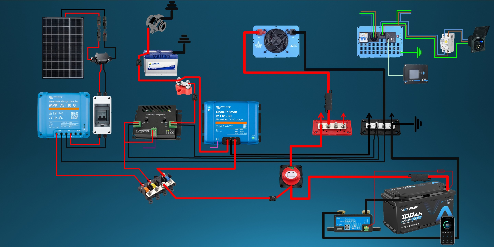

Wohnmobil Solaranlage nachrüsten: Stufe 1
Wohnmobil Solaranlage selber einbauen: 100 Ah LiFePO4, 150 W Solar, Ladebooster, Schaltplan-Orientierung, Materialliste und Kosten.
Beitrag zum Einbau ansehenHier entstehen Beiträge zu typischen Ausbaustufen, Solaranlagen, LiFePO4-Batterien, Ladeboostern, Wechselrichtern und Planungsfragen: von der einfachen Basisversorgung bis zum grossen Autarkie-System.

Jeder Beitrag zeigt, für wen eine Stufe gedacht ist, welche Komponenten vorkommen und worauf du bei Planung, Kabelquerschnitten, Sicherungen und Alltagstauglichkeit achten solltest.
Wohnmobil Solaranlage selber einbauen: 100 Ah LiFePO4, 150 W Solar, Ladebooster, Schaltplan-Orientierung, Materialliste und Kosten.
Beitrag zum Einbau ansehen